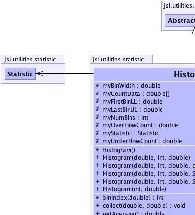
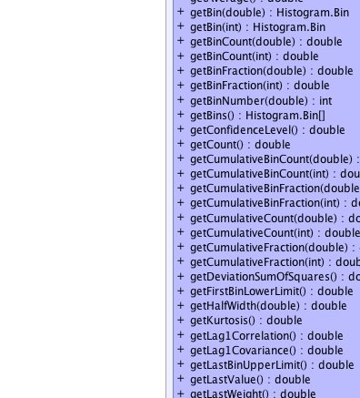
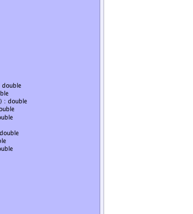
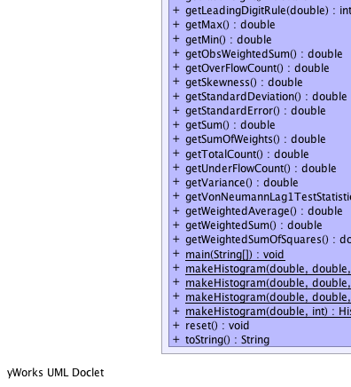
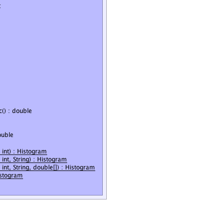

jsl.utilities.statistic.AbstractCollector
jsl.utilities.statistic.AbstractStatistic
jsl.utilities.statistic.Histogram
jsl.utilities.statistic.AbstractCollector
jsl.utilities.statistic.AbstractStatistic
jsl.utilities.statistic.Histogram
|
||||||||||
| PREV CLASS NEXT CLASS | FRAMES NO FRAMES | |||||||||
| SUMMARY: NESTED | FIELD | CONSTR | METHOD | DETAIL: FIELD | CONSTR | METHOD | |||||||||
java.lang.Object
public class Histogram
A Histogram tabulates data into bins. The user must specify the lower limit of the first bin, the width of the bins, and the number of bins. Alternatively, the user can use the static methods makeHistogram() to specify the range of the data via a lower limit and upper limit and a desired number of bins. For a histogram that automatically specifies the bins, see CachedHistogram
|  |  |
|  |  |
|  |  |
| Nested Class Summary | |
|---|---|
class |
Histogram.Bin
|
| Field Summary | |
|---|---|
protected double |
myBinWidth
Width of a bin. |
protected double[] |
myCountData
Histogram counts. |
protected double |
myFirstBinLL
Lower limit of first histogram bin. |
protected double |
myLastBinUL
Upper limit of last histogram bin. |
protected int |
myNumBins
The number of bins for the histogram |
protected double |
myOverFlowCount
Counts of values located above last bin. |
protected Statistic |
myStatistic
Collects statistical information |
protected double |
myUnderFlowCount
Counts of values located below first bin. |
| Fields inherited from class jsl.utilities.statistic.AbstractStatistic |
|---|
DEFAULT_CONFIDENCE_LEVEL, myConfidenceLevel, myNumMissing |
| Fields inherited from class jsl.utilities.statistic.AbstractCollector |
|---|
myData, myDataArraySize, myId, myName, mySaveCount, mySaveDataFlag, myWeights |
| Fields inherited from interface jsl.utilities.statistic.SaveDataIfc |
|---|
DEFAULT_DATA_ARRAY_SIZE |
| Constructor Summary | |
|---|---|
protected |
Histogram()
|
|
Histogram(double firstBinLL,
int numBins,
double binWidth)
Create a histogram |
|
Histogram(double firstBinLL,
int numBins,
double binWidth,
double[] values)
Create a histogram with based on the provided values |
|
Histogram(double firstBinLL,
int numBins,
double binWidth,
java.lang.String name)
Create a histogram with the given name |
|
Histogram(double firstBinLL,
int numBins,
double binWidth,
java.lang.String name,
double[] values)
Create a histogram with the given name based on the provided values |
|
Histogram(int numBins,
double binWidth)
Create a histogram with the lower limit of the first bin equal to 0.0 |
| Method Summary | |
|---|---|
protected int |
binIndex(double x)
computes the zero based bin index for the bin that x falls within |
void |
collect(double x,
double weight)
Collect weighted statistics on the supplied value using the supplied weight |
double |
getAverage()
Gets the unweighted average of the observations. |
Histogram.Bin |
getBin(double x)
The bin that x falls in |
Histogram.Bin |
getBin(int binNum)
Returns an instance of a Bin for the supplied bin number The bin does not reflect changes to the histogram after this call |
double |
getBinCount(double x)
Returns the curent bin count for the bin associated with x |
double |
getBinCount(int binNum)
Returns the bin count for the indicated bin |
double |
getBinFraction(double x)
Returns the fraction of the data relative to those tabulated in the bins for the bin number associated with the x |
double |
getBinFraction(int binNum)
Returns the fraction of the data relative to those tabulated in the bins for the supplied bin number |
int |
getBinNumber(double x)
Bins are numbered starting at 1 through the number of bins |
Histogram.Bin[] |
getBins()
Returns an array of Bins based on the current state of the histogram |
double |
getConfidenceLevel()
Gets the confidence level. |
double |
getCount()
Gets the count of the number of the observations. |
double |
getCumulativeBinCount(double x)
Returns the cumulative count of all bins up to and including the bin containing the value x |
double |
getCumulativeBinCount(int binNum)
Returns the cumulative count of all the bins up to and including the indicated bin number |
double |
getCumulativeBinFraction(double x)
Returns the cumulative fraction of the data up to and including the bin containing the value of x |
double |
getCumulativeBinFraction(int binNum)
Returns the cumulatiive fraction of the data up to and including the indicated bin number |
double |
getCumulativeCount(double x)
Returns the cumulative count of all the data (including under flow and over flow) for all bins up to and including the bin containing x |
double |
getCumulativeCount(int binNum)
Returns the cumulative count of all the data (including under flow and over flow) up to and including the indicated bin |
double |
getCumulativeFraction(double x)
Returns the cumulative fraction of all the data up to an including the bin containing the value x, (includes over and under flow) |
double |
getCumulativeFraction(int binNum)
Returns the cumulative fraction of all the data up to and including the supplied bin (includes over and under flow) |
double |
getDeviationSumOfSquares()
Gets the sum of squares of the deviations from the average This is the numerator in the classic sample variance formula |
double |
getFirstBinLowerLimit()
The first bin's lower limit |
double |
getHalfWidth(double alpha)
Gets the confidence interval half-width. |
double |
getKurtosis()
Gets the kurtosis of the data |
double |
getLag1Correlation()
Gets the lag-1 sample correlation of the unweighted observations. |
double |
getLag1Covariance()
Gets the lag-1 sample covariance of the unweighted observations. |
double |
getLastBinUpperLimit()
The last bin's upper limit |
double |
getLastValue()
Gets the last observed data point |
double |
getLastWeight()
Gets the last observed weight |
int |
getLeadingDigitRule(double a)
Computes the right most meaningful digit according to (int)Math.floor(Math.log10(a*getStandardError())) See doi 10.1287.opre.1080.0529 by Song and Schmeiser |
double |
getMax()
Gets the maximum of the observations. |
double |
getMin()
Gets the minimum of the observations. |
double |
getObsWeightedSum()
|
double |
getOverFlowCount()
The number of observations that fell past the last bin's upper limit |
double |
getSkewness()
Gets the skewness of the data |
double |
getStandardDeviation()
Gets the unweighted sample standard deviation of the observations. |
double |
getStandardError()
Gets the standard error of the observations. |
double |
getSum()
Gets the unweighted sum of the observations. |
double |
getSumOfWeights()
Gets the sum of the observed weights. |
double |
getTotalCount()
Total number of observations collected including overflow and underflow |
double |
getUnderFlowCount()
The number of observations that fell below the first bin's lower limit |
double |
getVariance()
Gets the unweighted sample variance of the observations. |
double |
getVonNeumannLag1TestStatistic()
Gets the Von Neumann Lag 1 test statistic for checking the hypothesis that the data are uncorrelated Note: See Handbook of Simulation, Jerry Banks editor, McGraw-Hill, pg 253. |
double |
getWeightedAverage()
Gets the weighted average of the observations. |
double |
getWeightedSum()
Gets the weighted sum of observations observed. |
double |
getWeightedSumOfSquares()
Gets the weighted sum of squares of the observations. |
static void |
main(java.lang.String[] args)
|
static Histogram |
makeHistogram(double lowerLimit,
double upperLimit,
int numBins)
Create a histogram |
static Histogram |
makeHistogram(double lowerLimit,
double upperLimit,
int numBins,
java.lang.String name)
Create a histogram with the given name |
static Histogram |
makeHistogram(double lowerLimit,
double upperLimit,
int numBins,
java.lang.String name,
double[] values)
Create a histogram with the given name based on the provided values |
static Histogram |
makeHistogram(double upperLimit,
int numBins)
Create a histogram with lower limit set to zero |
void |
reset()
Resets the collection as if no data had been collected. |
java.lang.String |
toString()
Returns a String representation of the Statistic |
| Methods inherited from class jsl.utilities.statistic.AbstractStatistic |
|---|
compareTo, fillStatistics, getConfidenceInterval, getConfidenceInterval, getCSVHeader, getCSVStatistic, getCSVStatisticHeader, getCSVValues, getHalfWidth, getNumberMissing, getStatistics, getStatistics, setConfidenceLevel |
| Methods inherited from class jsl.utilities.statistic.AbstractCollector |
|---|
clearSavedData, collect, collect, collect, collect, collect, collect, collect, getId, getName, getSaveDataOption, getSavedData, getSavedWeights, saveData, setId, setName, setSaveDataArraySizeIncrement, setSaveDataOption |
| Methods inherited from class java.lang.Object |
|---|
clone, equals, finalize, getClass, hashCode, notify, notifyAll, wait, wait, wait |
| Methods inherited from interface jsl.utilities.statistic.StatisticAccessorIfc |
|---|
getName |
| Field Detail |
|---|
protected int myNumBins
protected double myFirstBinLL
protected double myLastBinUL
protected double myBinWidth
protected double[] myCountData
protected double myUnderFlowCount
protected double myOverFlowCount
protected Statistic myStatistic
| Constructor Detail |
|---|
protected Histogram()
public Histogram(int numBins,
double binWidth)
numBins - number of binsbinWidth - The width of each bin
public Histogram(double firstBinLL,
int numBins,
double binWidth)
firstBinLL - lower limit of first binnumBins - number of binsbinWidth - The width of each bin
public Histogram(double firstBinLL,
int numBins,
double binWidth,
java.lang.String name)
firstBinLL - lower limit of first binnumBins - number of binsbinWidth - The width of each binname - the name of the histogram
public Histogram(double firstBinLL,
int numBins,
double binWidth,
double[] values)
firstBinLL - lower limit of first binnumBins - number of binsbinWidth - The width of each binvalues - an array of data values to collect on when creating the histogram
public Histogram(double firstBinLL,
int numBins,
double binWidth,
java.lang.String name,
double[] values)
firstBinLL - lower limit of first binnumBins - number of binsbinWidth - The width of each binname - the name of the histogramvalues - an array of data values to collect on when creating the histogram| Method Detail |
|---|
public static Histogram makeHistogram(double upperLimit,
int numBins)
upperLimit - the upper limit of the last binnumBins - the number of bins to create
public static Histogram makeHistogram(double lowerLimit,
double upperLimit,
int numBins)
lowerLimit - lower limit of first binupperLimit - the upper limit of the last binnumBins - the number of bins to create
public static Histogram makeHistogram(double lowerLimit,
double upperLimit,
int numBins,
java.lang.String name)
lowerLimit - lower limit of first binupperLimit - the upper limit of the last binnumBins - the number of bins to createname - the name of the histogram
public static Histogram makeHistogram(double lowerLimit,
double upperLimit,
int numBins,
java.lang.String name,
double[] values)
lowerLimit - lower limit of first binupperLimit - the upper limit of the last binnumBins - the number of bins to createname - the name of the histogramvalues - an array of data values to collect on when creating the histogram
public void collect(double x,
double weight)
CollectorIfc
collect in interface CollectorIfccollect in class AbstractStatisticx - a double representing the observationweight - a double to be used to weight the observationprotected final int binIndex(double x)
x -
public void reset()
CollectorIfc
reset in interface CollectorIfcreset in class AbstractCollectorpublic final int getBinNumber(double x)
x - double
public final double getUnderFlowCount()
public final double getOverFlowCount()
public final Histogram.Bin getBin(double x)
x -
public final Histogram.Bin getBin(int binNum)
binNum -
public final Histogram.Bin[] getBins()
public final double getBinCount(double x)
x -
public final double getBinCount(int binNum)
binNum -
public final double getBinFraction(int binNum)
binNum -
public final double getBinFraction(double x)
x -
public final double getCumulativeBinCount(double x)
x -
public final double getCumulativeBinCount(int binNum)
binNum -
public final double getCumulativeBinFraction(int binNum)
binNum -
public final double getCumulativeBinFraction(double x)
x -
public final double getCumulativeCount(int binNum)
binNum -
public final double getCumulativeCount(double x)
x -
public final double getCumulativeFraction(int binNum)
binNum -
public final double getCumulativeFraction(double x)
x -
public final double getTotalCount()
public final double getFirstBinLowerLimit()
public final double getLastBinUpperLimit()
public java.lang.String toString()
StatisticAccessorIfc
toString in interface StatisticAccessorIfctoString in class java.lang.Objectpublic final double getAverage()
StatisticAccessorIfc
public final double getConfidenceLevel()
StatisticAccessorIfc
getConfidenceLevel in interface StatisticAccessorIfcgetConfidenceLevel in class AbstractStatisticpublic final double getCount()
StatisticAccessorIfc
public final double getDeviationSumOfSquares()
StatisticAccessorIfc
public double getHalfWidth(double alpha)
StatisticAccessorIfc
public final double getKurtosis()
StatisticAccessorIfc
public final double getLag1Correlation()
StatisticAccessorIfc
public final double getLag1Covariance()
StatisticAccessorIfc
public final double getLastValue()
StatisticAccessorIfc
public final double getLastWeight()
StatisticAccessorIfc
public final double getMax()
StatisticAccessorIfc
public final double getMin()
StatisticAccessorIfc
public final double getObsWeightedSum()
public final double getSkewness()
StatisticAccessorIfc
public final double getStandardDeviation()
StatisticAccessorIfc
public final double getStandardError()
StatisticAccessorIfc
public final double getSum()
StatisticAccessorIfc
public final double getSumOfWeights()
StatisticAccessorIfc
public final double getVariance()
StatisticAccessorIfc
public final double getVonNeumannLag1TestStatistic()
StatisticAccessorIfc
public final double getWeightedAverage()
StatisticAccessorIfc
public final double getWeightedSum()
StatisticAccessorIfc
public final double getWeightedSumOfSquares()
StatisticAccessorIfc
public final int getLeadingDigitRule(double a)
StatisticAccessorIfc
public static void main(java.lang.String[] args)
|
||||||||||
| PREV CLASS NEXT CLASS | FRAMES NO FRAMES | |||||||||
| SUMMARY: NESTED | FIELD | CONSTR | METHOD | DETAIL: FIELD | CONSTR | METHOD | |||||||||